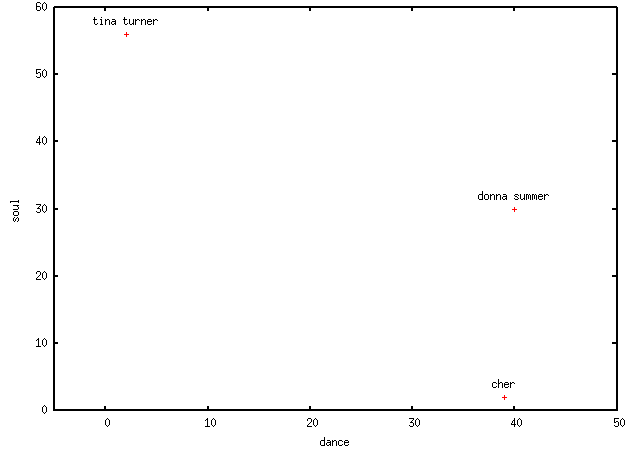
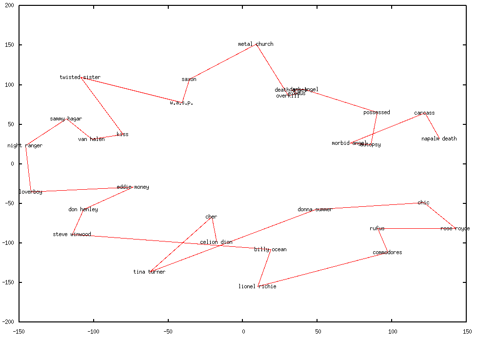
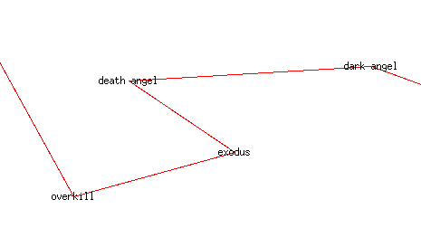
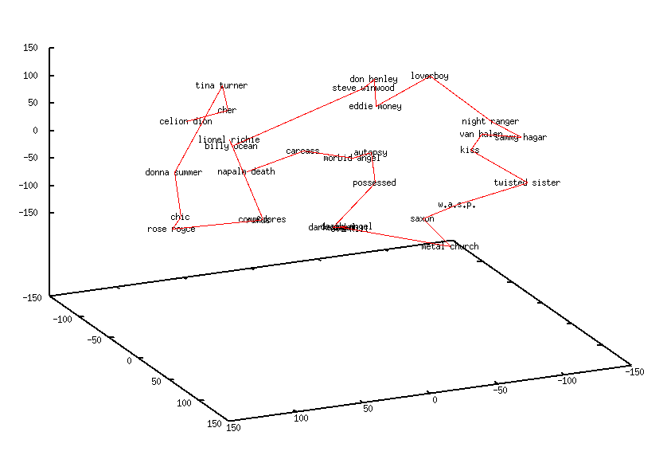
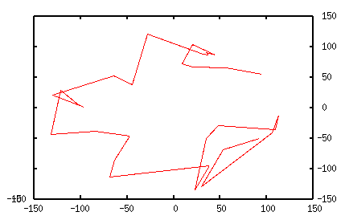
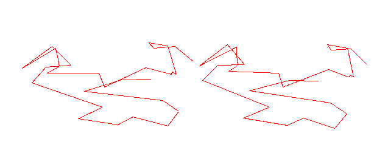

we have the link-to shortest path from celion dion to napalm death as far as similiarily goes.
but is it a straight line? similiarity doesnt give us this, we need a pointwise measure that can be visualised
lets try tags! another bit of data from audioscrobbler is tags against artists. (it's appears the number of tags has been normalised so the values range from 0 to 100)
but how do tags relate to points in space?
consider the tag glam rock;
so in the glam rock dimension we can say kiss is closer to twisted sister than napalm death
if we consider two dimensions; say, dance and soul, we can compare cher, tina turner and donna summer in two dimensions 
we can see that, considering just dance and soul, cher is "closer" to donna summer than to tina turner.
by adding a 3rd tag to compare with and we get points in 3 dimensions; a 4th tag , 4 dimensional points and so on.
in fact cher, tina turner and donna summer have 166 unique tags against them so these three could be compared in 166 dimensional space.
considering all 31 bands from celion dion to napalm death (celion dion, cher, tina turner, donna summer, chic, rose royce, rufus, commodores, lionel richie, billy ocean, steve winwood, don henley, eddie money, loverboy, night ranger, sammy hagar, van halen, kiss, twisted sister, w.a.s.p., saxon, metal church, overkill, exodus, death angel, dark angel, possessed, autopsy, morbid angel, carcass, napalm death) we have 1004 unique tags
the trouble is points in 3 dimensional space are hard enough to visualise on a computer so how on earth can we handle 1004 dimensions! one technique is multi dimensional scaling
the idea is to pick points in a lower dimensional space (say 2 or 3) whos distances are as close as possible to the distances of the points in the higher dimensional space (in our case 1004 dimensions). the rationale is that that points close in the 1004 dimensional space will be close in the 2 / 3 dimensional space and we'll be able to see any obvious relationships.
it's not perfect though since the reduction of dimensions means a loss of information so there are cases where the distances can't be preserved... consider in 2 dimensions the points of an equilateral triangle, all three points are equidistant from each other. we can't reduce this to 1 dimension (ie a line) since you can't have 3 points equidistant from each other (without a dose of C20 H25 N3 O)
so the points and path from celion dion reduced from 1003 dimensions to 2 looks like this.... 
it's an interesting coil, reminds me a bit of an alpha helix
notice the dense clustering of points around the death metal bands who have lots of tags in common 
reducing to 3d instead gives 
not suprisingly this is better visualised in a tool where you can rotate the dataset. if you have gnuplot here's the dat file for the 3d projection. plot it with gnuplot> splot 'out.3d' with lines, 'out.3d' with labels
viewed from the top it's a simliar coil to the 2d reduction 
and here's a 3d eye style version for those of us who like to cross their eyes... 